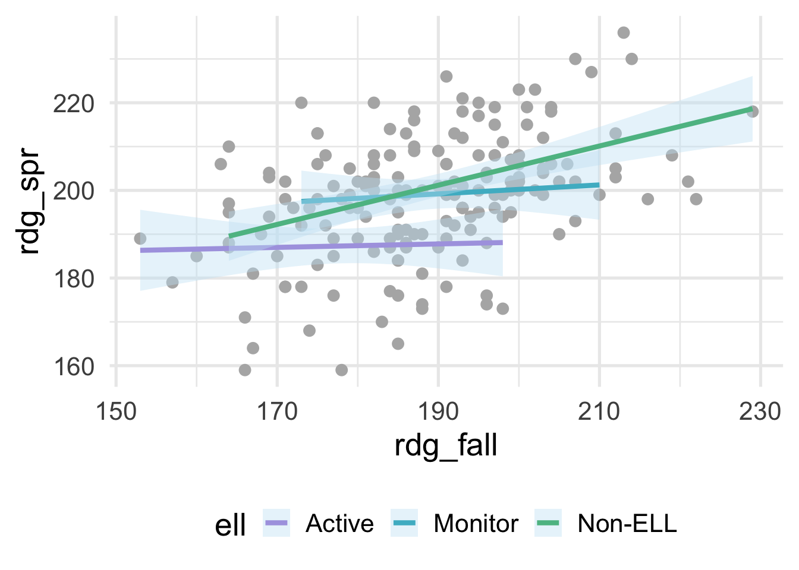

3.8 Interactions
An interaction occurs when the slope, or relation, between one variable and the outcome depends upon a second variable. This is also often referred to as moderation or a moderating variable. For example, consider data that look like this
benchmarks <- read_csv(here::here("data", "benchmarks.csv"))
ggplot(benchmarks, aes(rdg_fall, rdg_spr)) +
geom_point(color = "gray70") +
geom_smooth(aes(color = ell),
method = "lm")
where ell stands for English language learner. The plot above shows the relation between students scores on a reading assessment administered in the fall and the spring by ELL status. Notice that the slope for Non-ELL is markedly steeper than the other two groups. ELL status thus moderates the relation between the fall and spring assessment scores. If we’re fitting a model within a linear regression framework, we’ll want to make sure that we model the slopes separately for each of these groups (otherwise we would be leaving out important structure in the data, and our model performance would suffer). Interactions are powerful and important to consider, particularly if there is strong theory (or empirical evidence) suggesting that an interaction exists. However, they are not needed in many frameworks and can be derived from the data directly (e.g., tree-based methods, where the degree of possible interaction is determined by the depth of the tree). In this section, we therefore focus on interactions within a linear regression framework.
3.8.1 Creating interactions “by hand”
Even with base R, modeling interactions is pretty straightforward. In the above, we would just specify something like
or equivalently
However, this is doing some work under the hood for you which might go unnoticed. First, it’s dummy-coding ell, then it’s creating, in this case, two new variables that are equal to \(ELL_{Monitor} \times Rdg_{fall}\) and \(ELL_{Non-ELL} \times Rdg_{fall}\) (with \(ELL_{Active}\) set as the reference group by default).
Let’s try doing this manually. First we need to dummy code ell. To make things a bit more clear, I’ll only select the variables here that we’re using in our modeling.
dummies <- benchmarks %>%
select(rdg_fall, ell, rdg_spr) %>%
mutate(ell_monitor = ifelse(ell == "Monitor", 1, 0),
ell_non = ifelse(ell == "Non-ELL", 1, 0),)
dummies## # A tibble: 174 x 5
## rdg_fall ell rdg_spr ell_monitor ell_non
## <dbl> <chr> <dbl> <dbl> <dbl>
## 1 181 Active 194 0 0
## 2 166 Non-ELL 159 0 1
## 3 216 Non-ELL 198 0 1
## 4 203 Non-ELL 204 0 1
## 5 198 Active 173 0 0
## 6 188 Active 173 0 0
## 7 202 Monitor 200 1 0
## 8 182 Active 206 0 0
## 9 194 Non-ELL 191 0 1
## 10 170 Active 185 0 0
## # … with 164 more rowsNext, we’ll multiply each of these dummy variables by rdg_fall.
interactions <- dummies %>%
mutate(fall_monitor = rdg_fall * ell_monitor,
fall_non = rdg_fall * ell_non)
interactions## # A tibble: 174 x 7
## rdg_fall ell rdg_spr ell_monitor ell_non fall_monitor fall_non
## <dbl> <chr> <dbl> <dbl> <dbl> <dbl> <dbl>
## 1 181 Active 194 0 0 0 0
## 2 166 Non-ELL 159 0 1 0 166
## 3 216 Non-ELL 198 0 1 0 216
## 4 203 Non-ELL 204 0 1 0 203
## 5 198 Active 173 0 0 0 0
## 6 188 Active 173 0 0 0 0
## 7 202 Monitor 200 1 0 202 0
## 8 182 Active 206 0 0 0 0
## 9 194 Non-ELL 191 0 1 0 194
## 10 170 Active 185 0 0 0 0
## # … with 164 more rowsAs would be expected, these values are zero if they are not for the corresponding group, and are otherwise equal to rdg_fall. If we enter all these variables in our model, then our model intercept will represent the intercept for the active group, with the corresponding slope estimated by rdg_fall. The ell_monitor and ell_non terms represent the intercepts for the monitor and non-ELL groups, respectively, and each of these slopes are estimated by the corresponding interaction. Let’s try.
m_byhand <- lm(rdg_spr ~ rdg_fall + ell_monitor + ell_non +
fall_monitor + fall_non,
data = interactions)
summary(m_byhand)##
## Call:
## lm(formula = rdg_spr ~ rdg_fall + ell_monitor + ell_non + fall_monitor +
## fall_non, data = interactions)
##
## Residuals:
## Min 1Q Median 3Q Max
## -36.812 -7.307 -0.100 8.616 26.693
##
## Coefficients:
## Estimate Std. Error t value Pr(>|t|)
## (Intercept) 180.29666 32.95228 5.471 1.6e-07 ***
## rdg_fall 0.03939 0.18459 0.213 0.8313
## ell_monitor -0.47286 53.18886 -0.009 0.9929
## ell_non -64.12123 36.80395 -1.742 0.0833 .
## fall_monitor 0.06262 0.28669 0.218 0.8274
## fall_non 0.40801 0.20346 2.005 0.0465 *
## ---
## Signif. codes: 0 '***' 0.001 '**' 0.01 '*' 0.05 '.' 0.1 ' ' 1
##
## Residual standard error: 12.37 on 168 degrees of freedom
## Multiple R-squared: 0.2652, Adjusted R-squared: 0.2433
## F-statistic: 12.13 on 5 and 168 DF, p-value: 4.874e-10And we can verify that this does, indeed, get us the same results that we would have obtained with the shortcut syntax with base R.
##
## Call:
## lm(formula = rdg_spr ~ rdg_fall * ell, data = benchmarks)
##
## Residuals:
## Min 1Q Median 3Q Max
## -36.812 -7.307 -0.100 8.616 26.693
##
## Coefficients:
## Estimate Std. Error t value Pr(>|t|)
## (Intercept) 180.29666 32.95228 5.471 1.6e-07 ***
## rdg_fall 0.03939 0.18459 0.213 0.8313
## ellMonitor -0.47286 53.18886 -0.009 0.9929
## ellNon-ELL -64.12123 36.80395 -1.742 0.0833 .
## rdg_fall:ellMonitor 0.06262 0.28669 0.218 0.8274
## rdg_fall:ellNon-ELL 0.40801 0.20346 2.005 0.0465 *
## ---
## Signif. codes: 0 '***' 0.001 '**' 0.01 '*' 0.05 '.' 0.1 ' ' 1
##
## Residual standard error: 12.37 on 168 degrees of freedom
## Multiple R-squared: 0.2652, Adjusted R-squared: 0.2433
## F-statistic: 12.13 on 5 and 168 DF, p-value: 4.874e-103.8.2 Creating interactions with {recipes}
Specifying interactions in a recipe is similar to other steps, with one small exception, which is that the use of the tilde, ~, is required. Note that, once again, order does matter, and you should always do your dummy coding before specifying interactions with categorical variables. In the example before, this would correspond to
recipe(rdg_spr ~ rdg_fall + ell, benchmarks) %>%
step_dummy(all_nominal()) %>%
step_interact(~rdg_fall:starts_with("ell")) %>%
prep() %>%
bake(new_data = NULL)## # A tibble: 174 x 6
## rdg_fall rdg_spr ell_Monitor ell_Non.ELL rdg_fall_x_ell_Monitor rdg_fall_x_ell_Non.ELL
## <dbl> <dbl> <dbl> <dbl> <dbl> <dbl>
## 1 181 194 0 0 0 0
## 2 166 159 0 1 0 166
## 3 216 198 0 1 0 216
## 4 203 204 0 1 0 203
## 5 198 173 0 0 0 0
## 6 188 173 0 0 0 0
## 7 202 200 1 0 202 0
## 8 182 206 0 0 0 0
## 9 194 191 0 1 0 194
## 10 170 185 0 0 0 0
## # … with 164 more rowsThere are a few things to mention here. First, the data do look identical (minus the column names) to what we created by hand, so that’s good news. However, we also used starts_with here, rather than just specifying something like step_interact(~rdg_fall:ell). This is because after dummy coding, the column names change (as you can see in the above). By specifying starts_with, we are ensuring that we get all the interactions we need. If we forget this step, we end up with the wrong output, along with a warning.
recipe(rdg_spr ~ rdg_fall + ell, benchmarks) %>%
step_dummy(all_nominal()) %>%
step_interact(~rdg_fall:ell) %>%
prep() %>%
bake(new_data = NULL)## # A tibble: 174 x 4
## rdg_fall rdg_spr ell_Monitor ell_Non.ELL
## <dbl> <dbl> <dbl> <dbl>
## 1 181 194 0 0
## 2 166 159 0 1
## 3 216 198 0 1
## 4 203 204 0 1
## 5 198 173 0 0
## 6 188 173 0 0
## 7 202 200 1 0
## 8 182 206 0 0
## 9 194 191 0 1
## 10 170 185 0 0
## # … with 164 more rowsThis is because its trying to find a column called ell to multiply with rdg_fall, but no such variable exists after dummy coding.